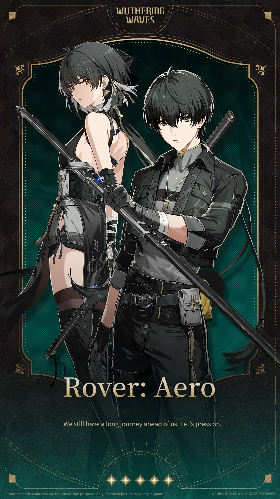
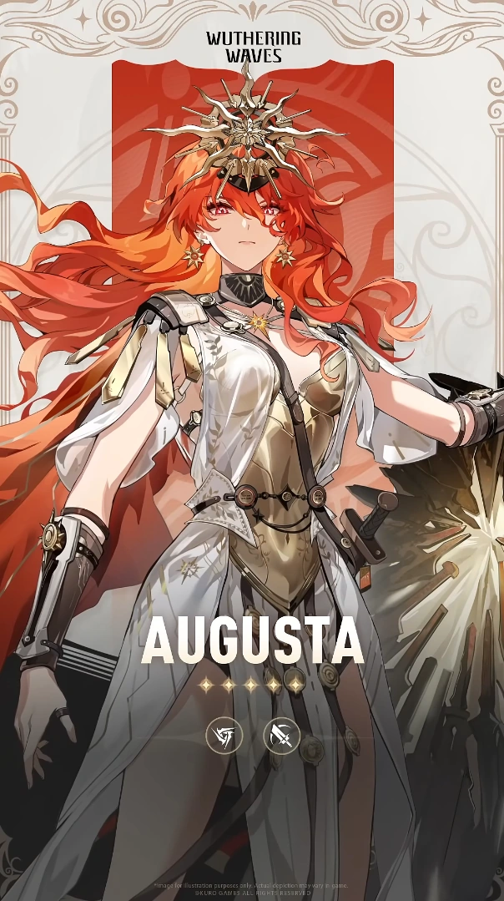

I Risonatori Leggendari
Conosci i guardiani dell'umanità

Rover
Protagonista
Risvegliatosi con un passato sconosciuto, Rover è un Arbiter affetto da amnesia che intraprende un viaggio per scoprire la verità e recuperare i propri ricordi perduti. Man mano che i segreti vengono svelati, stabiliscono connessioni più profonde con Solaris-3 e le sue nazioni.

Cartethyia
Tempesta Piumata
In tutta Rinascita, è venerata come Fleurdelys, la "Fanciulla Benedetta" e, in alcuni racconti, "La Fanciulla Martire". Figura chiave nella storia della regione, esercita una profonda influenza, grazie ai suoi legami con l'Imperatore Sentinella, il Leviatano Threnodiano e la Marea Oscura. Il suo vero desiderio, tuttavia, risiede nel liberarsi dalle catene dei suoi titoli e vivere i suoi giorni come una retta e giusta cavaliere errante.

Iuno
Sacerdotessa
È una sacerdotessa prodigiosa e rinomata di Settimont's Tempio di Tetragon, incaricato di diffondere profezie che plasmano la vita dei suoi cittadini. Sebbene sia benedetta e maledetta dal potere di predire il futuro degli altri, le sue responsabilità sono contrastate dal suo atteggiamento arrogante, schietto e ribelle, che incarna il desiderio di sfidare tutte le macchinazioni più crudeli del destino.

Augusta
Gladiatore
L'impavido Eforo di Settimont con una volontà di ferro, rimane una leader ferocemente resiliente ma umile nonostante le incommensurabili difficoltà della sua infanzia e del suo mandato come Gladiatrice. Sebbene fosse una semplice mortale, ha padroneggiato le arti del combattimento, della strategia e del suo Forte attraverso innumerevoli conflitti, raggiungendo vette che pochi altri come lei hanno mai tentato di raggiungere.